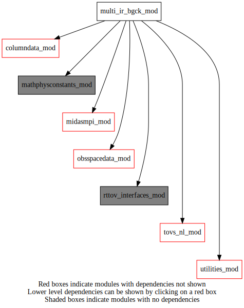
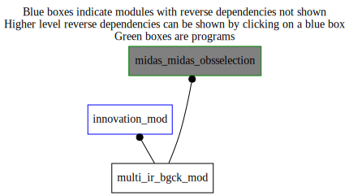

Dependency Diagrams:
 Direct Dependency Diagram¶
 Reverse Dependency Diagram¶
Description
MODULE multi_ir_bgck_mod (prefix=’irbg’ category=’1. High-level functionality’)
- Purpose
Variables for multispectral infrared background check and quality control.
Quick access
- Types
- Routines
bgck_get_qcid(),calcbt(),calcreflect(),calcul_median_fast(),cloud_height(),cloud_top(),co2_slicing(),convert_avhrr(),cor_albedo(),drcld(),drm(),estim_ts(),garand1998nadon(),get_avhrr_emiss(),get_top(),irbg_bgcheckir(),irbg_doqualitycontrol(),irbg_init(),irbg_setup(),lineq(),min_pres_new(),monotonic_inversion(),seltop(),stat_avhrr(),tovs_rttov_avhrr_for_iasi(),visocn()Needed modules
rttov_interfaces_mod: MODULE rttov_interfaces_mod (prefix=’’ category=’9. Global interfaces’)
tovs_nl_mod: MODULE tovs_nl (prefix=’tvs’ category=’5. Observation operators’)
rttov_const(inst_id_iasi())
rttov_types(rttov_coefs(),rttov_profile(),rttov_radiance(),rttov_transmission(),rttov_chanprof(),rttov_emissivity())
utilities_mod: MODULE utilities_mod (prefix=’utl’ category=’8. Low-level utilities and constants’)
obsspacedata_mod: MODULE obsSpaceData_mod (prefix=’obs’ category=’6. High-level data objects’)
midasmpi_mod: MODULE midasMpi_mod (prefix=’mmpi’ category=’8. Low-level utilities and constants’)
columndata_mod: MODULE columnData_mod (prefix=’col’ category=’6. High-level data objects’)
mathphysconstants_mod: MODULE MathPhysConstants_mod (prefix=’mpc’ category=’8. Low-level utilities and constants’)Types
- type multi_ir_bgck_mod/avhrr_bgck_iasi¶
- Type fields
% albedmoy (nclassavhrr,nvis) [real ]
% albedstd (nclassavhrr,nvis) [real ]
% albstd_pixeliasi (nvis) [real ]
% cfrac (nclassavhrr) [real ]
% emiss (nvis+nir-(nvis+1)+1) [real ]
% radclearcalc (nvis+nir-(nvis+1)+1) [real ]
% radmoy (nclassavhrr,nchanavhrr) [real ]
% radovcalc (*,*) [real ,allocatable]
% radstd (nclassavhrr,nchanavhrr) [real ]
% tbclearcalc (nvis+nir-(nvis+1)+1) [real ]
% tbmoy (nclassavhrr,nvis+nir-(nvis+1)+1) [real ]
% tbstd (nclassavhrr,nvis+nir-(nvis+1)+1) [real ]
% tbstd_pixeliasi (nvis+nir-(nvis+1)+1) [real ]
% transmsurf (nvis+nir-(nvis+1)+1) [real ]
Variables
Subroutines and functions
- subroutine multi_ir_bgck_mod/irbg_init()¶
- Purpose
This subroutine reads the namelist section NAMBGCKIR for the module.
- Called from
- Call to
- subroutine multi_ir_bgck_mod/irbg_setup()¶
- Purpose
Memory allocation for the Hyperspectral Infrared background check variables.
- Called from
- Call to
- subroutine multi_ir_bgck_mod/irbg_bgcheckir(columntrlontrllev, obsspacedata)¶
- Purpose
Do background check on all hyperspectral infrared observations
- Arguments
columntrlontrllev [struct_columndata ]
obsspacedata [struct_obs ]
- Called from
- Call to
utl_tmg_start(),obs_getheaderindex(),obs_headelem_i(),tvs_isidburphyperspectral(),irbg_init(),tvs_isidburptovs(),tvs_isidburpinst(),tvs_getinstrumentid(),irbg_doqualitycontrol(),utl_tmg_stop()
- subroutine multi_ir_bgck_mod/bgck_get_qcid(instrumentname, qcid)¶
- Arguments
instrumentname [character ,in]
qcid [integer ,out]
- Called from
- Call to
- subroutine multi_ir_bgck_mod/irbg_doqualitycontrol(columntrlontrllev, obsspacedata, instrumentname[, id_opt])¶
- Purpose
Quality control of hyperspectral infrared observations. assign assimilation flags to observations
- Arguments
columntrlontrllev [struct_columndata ,in]
obsspacedata [struct_obs ,inout]
instrumentname [character ,in]
- Options
id_opt [integer ,in,]
- Called from
- Call to
tvs_getprofile(),bgck_get_qcid(),utl_abort(),obs_getheaderindex(),obs_headelem_i(),tvs_isidburpinst(),col_getnumlev(),utl_checkallocationstatus(),col_getpressure(),tvs_isidburptovs(),obs_headelem_r(),col_getelem(),col_getheight(),obs_bodyelem_i(),obs_bodyelem_r(),tvs_getlocalchannelindexfromchannelnumber(),cloud_height(),get_avhrr_emiss(),tovs_rttov_avhrr_for_iasi(),convert_avhrr(),stat_avhrr(),garand1998nadon(),estim_ts(),visocn(),cor_albedo(),cloud_top(),co2_slicing(),seltop(),min_pres_new(),obs_headset_i(),obs_bodyset_i()
- subroutine multi_ir_bgck_mod/convert_avhrr(sunzen, avhrr)¶
- Purpose
conversion des radiance IR en temperatures de brillance et des radiances visibles en “albedo”
- Arguments
sunzen [real ,in] :: Solar zenith angle
avhrr [avhrr_bgck_iasi ,inout] :: Structure containing AVHRR observations
- Called from
- Call to
- subroutine multi_ir_bgck_mod/calcreflect(rad, sunzen, reflect)¶
- Purpose
Computes Top of Atmosphere Albedo as defined by equation (4) of Rao et al. Int. J. of Remote Sensing, 2003, vol 24, no 9, 1913-1924
- Arguments
rad (nvis) [real ,in] :: radiances array
sunzen [real ,in] :: Sun zenith angle
reflect (nvis) [real ,out] :: TOA albedo en %
- Called from
- subroutine multi_ir_bgck_mod/calcbt(rad, tb, dtbsdrad, freq, offset, slope)¶
- Purpose
Computes brightness temperature (bt) and the first derivative of bt with respect to radiance, from radiance, frequencies
- Arguments
rad (*) [real ,in] :: Radiance
tb (size(rad) [real ,out]
dtbsdrad (size(rad) [real ,out]
freq (size(rad) [real ,in]
offset (size(rad) [real ,in]
slope (size(rad) [real ,in]
- Called from
- subroutine multi_ir_bgck_mod/stat_avhrr(avhrr)¶
- Purpose
calcul de statistiques sur l’information sous-pixel AVHRR
- Arguments
avhrr [avhrr_bgck_iasi ,inout]
- Called from
- subroutine multi_ir_bgck_mod/co2_slicing(ptop, ntop, fcloud, rcal, cloudyradiance, radobs, p0, plev, cldflag, rejflag, lev_start, ichref, ilist, ilist_pair)¶
- Purpose
cloud top height computation. cloud top from co2 slicing and cloud fraction estimate
- Arguments
ptop (nco2) [real ,out] :: Cloud top (hPa)
ntop (nco2) [integer ,out] :: Nearest pressure level corresponding to ptop (ptop <= p0)
fcloud (nco2) [real ,out] :: Cloud fraction
rcal (*) [real ,in] :: computed clear radiances (mW/m2/sr/cm-1)
cloudyradiance (size(rcal,size(plev) [real ,in]
radobs (size(rcal) [real ,in]
p0 [real ,in] :: surface pressure (hPa)
plev (*) [real ,in] :: pressure levels (hPa)
cldflag [integer ,in] :: Cloudy flag (0 Clear, 1 Cloudy, -1 undefined)
rejflag (,1) [integer ,in] :: flags for rejected observations
lev_start [integer ,inout] :: Level to start iteration (ideally tropopause)
ichref [integer ,in] :: window channel to predetermine clear
ilist (nco2) [integer ,in] :: first list of channels
ilist_pair (nco2) [integer ,in] :: second list channe
- Called from
- subroutine multi_ir_bgck_mod/seltop(etop, vtop, ecf, vcf, ngood, he, ht, cf, cfsub, ptop_mb, p0, cldflag, gncldflag)¶
- Purpose
Select cloud top by averaging co2-slicing results judged correct. all missing values are -1.
- Arguments
etop [real ,out] :: consensus cloud top (hPa)
vtop [real ,out] :: corresponding variance on etop (hPa)
ecf [real ,out] :: consensus effective cloud fraction
vcf [real ,out] :: corresponding variance on ecf
ngood [integer ,out] :: number of good estimates
he [real ,in] :: equivalent cloud top heights from a window channel (hPa)
ht (nco2) [real ,in] :: cloud tops from co2-slicing (hPa)
cf (nco2) [real ,in] :: effective cloud fraction for co2-slicing
cfsub [real ,in] :: visible (“subpixel”) cloud fraction
ptop_mb [real ,in] :: height (mb) from cloud_height subroutine
p0 [real ,in] :: surface pressure in (hPa)
cldflag [integer ,in] :: Cloudy flag (0 Clear, 1 Cloudy, -1 undefined)
gncldflag [integer ,in] :: Garand Nadon cloudy flag (0 Clear, 1 Cloudy, -1 undefined)
- Called from
- Call to
- subroutine multi_ir_bgck_mod/calcul_median_fast(nestimates, hin, fin, ctp, cfr)¶
- Purpose
Compute cloud fraction and height median.
- Arguments
nestimates [integer ,in] :: Number of Co2 slicing estimates
hin (*) [real ,in] :: Array of Height estimates
fin (*) [real ,in] :: Array of Cloud fraction estimates
ctp [real ,out] :: Median of cloud top pressure estimates
cfr [real ,out] :: Corresponding cloud fraction
- Called from
- subroutine multi_ir_bgck_mod/min_pres_new(maxheight, minp, pmin, dt1, p0, tau, plev, cldflag, modeltopindex)¶
- Purpose
from total transmittance array, find minimum height level of sensitivity for a number of profiles and channels. this may be used to select for assimilation only the observations without sensitivity to clouds, that is the response function significant only above cloud level. the criterion is that dtau/dplev > 0.01 for a 100 mb layer.
- Arguments
maxheight (*) [real ,out] :: Height (hPa) of the maximum of the weighting function
minp (size(maxheight) [integer ,out]
pmin (size(maxheight) [real ,out]
dt1 (size(maxheight) [real ,out]
p0 [real ,in] :: surface pressure (hPa)
tau (size(maxheight,size(plev) [real ,in]
plev (*) [real ,in] :: pressure levels (hPa)
cldflag [integer ,in] :: Cloudy flag (0 Clear, 1 Cloudy, -1 undefined)
modeltopindex [integer ,in] :: rt model level nearest to model top
- Called from
- subroutine multi_ir_bgck_mod/cloud_height(ptop, ntop, btobs, cldflag, tt, height, p0, plev, ichref, lev_start, iopt)¶
- Purpose
Computation of cloud top height (above the ground) based on matching observed brightness temperature at a reference surface channel with background temperature profile. to use with one reference channel. used here on model levels.
- Arguments
ptop [real ,out] :: Chosen equivalent cloud tops (in hpa|m with iopt = 1|2)
ntop [integer ,out] :: Number of possible ptop solutions
btobs (*) [real ,in] :: Observed brightness temperature (deg k)
cldflag [integer ,in] :: Cloudy flag (0 Clear, 1 Cloudy, -1 undefined)
tt (*) [real ,in] :: Temperature profiles (deg K)
height (size(tt) [real ,in]
p0 [real ,in] :: Surface pressure (hPa)
plev (size(tt) [real ,in]
ichref [integer ,in] :: Chosen reference surface channel
lev_start [integer ,inout] :: Level to start iteration (ideally tropopause)
iopt [integer ,in] :: Levels using plev (1) or height (2)
- Called from
- Call to
- subroutine multi_ir_bgck_mod/garand1998nadon(cldflag, btobs, tg, tt, height, ptop_eq, ntop_eq, ichref)¶
- Purpose
Determine if the profiles are clear or cloudy based on the algorithm of garand & nadon 98 j.clim v11 pp.1976-1996 with channel iref.
- Arguments
cldflag [integer ,inout] :: Cloudy flag (0 Clear, 1 Cloudy, -1 undefined)
btobs (*) [real ,in] :: Observed brightness temperatures (K)
tg [real ,in] :: Guess skin temperatures (K)
tt (*) [real ,in] :: Guess temperature profiles (K)
height (size(tt) [real ,in]
ptop_eq [real ,in] :: Chosen equivalent cloud tops (m)
ntop_eq [integer ,in] :: Number of possible ptop_eq solutions
ichref [integer ,in] :: Chosen reference surface channel
- Called from
- Call to
- subroutine multi_ir_bgck_mod/monotonic_inversion(ninvr, tg, tt, height, lvl)¶
- Purpose
Determine if there is a presence (ninvr=1) or not (ninvr=0) of a temperature inversion going from the surface up to the
- Arguments
height (size(tt) [real ,in] :: lvl
ninvr [integer ,out] :: Number of inversions FROM THE SURFACE TO HEIGHT LVL
tg [real ,in] :: Skin temperature (K)
tt (*) [real ,in] :: Temperature profile (K)
lvl [real ,in] :: Height to search for temperature inversion (m)
- Arguments
- Called from
- subroutine multi_ir_bgck_mod/estim_ts(ts, tg, emi, rcal, radobs, sfctau, cldflag, ichref, mycoefs)¶
- Purpose
Get an estimated skin temperature by inversion of radiative transfer equation assuming guess t and q profiles are perfect. designed for a single channel ichref and nprf profiles. assumes a real tg (guess) over oceans and a tg with hypothesis of unity emissivity over land.
- Note
Uses rcal = B(TG)*EMI*SFCtau + ATMOS_PART
- Arguments
ts [real ,out] :: Retrieved skin temperature (-1. for missing) SOLVES FOR ts
tg [real ,in] :: Guess skin temperature (K)
emi (*) [real ,in] :: Surface emissivities from window channel (0.-1.)
rcal (size(emi) [real ,in]
radobs (size(emi) [real ,in]
sfctau (size(emi) [real ,in]
cldflag [integer ,in] :: Cloudy flag (0 Clear, 1 Cloudy, -1 undefined)
ichref [integer ,in] :: Reference surface channel (subset values)
mycoefs [rttov_coefs ,in] :: RTTOV coefficients structure
- Called from
- subroutine multi_ir_bgck_mod/cloud_top(ptop_bt, ptop_rd, ntop_bt, ntop_rd, btobs, tt, height, rcal, p0, radobs, cloudyradiance, plev, cldflag, lev_start, iopt, ihgt, ilist[, rejflag_opt[, ichref_opt]])¶
- Purpose
Computation of cloud top height (above the ground) based on matching observed brightness temperature with background temperature profiles and/or computed observed radiances with background radiance profiles. to use with more than one channel. used here on rttov levels.
- Arguments
ptop_bt (*) [real ,out] :: Chosen equivalent cloud tops based on brightness temperatures (in hpa|m with iopt = 1|2)
ptop_rd (*) [real ,out] :: Chosen equivalent cloud tops based on radiances (in hpa|m with iopt = 1|2)
ntop_bt (*) [integer ,out] :: Number of possible ptop_bt solutions
ntop_rd (*) [integer ,out] :: Number of possible ptop_rd solutions
btobs (*) [real ,in] :: Observed brightness temperautres (K)
tt (*) [real ,in] :: Temperature profiles (K)
height (*) [real ,in] :: Height profiles above ground (m)
rcal (*) [real ,in] :: Computed clear radiances (mW/m2/sr/cm-1)
p0 [real ,in] :: Surface pressure (hPa)
radobs (*) [real ,in] :: Computed observed radiances (mW/m2/sr/cm-1)
cloudyradiance (*,*) [real ,in] :: Computed cloud radiances from each level (hPa)
plev (*) [real ,in] :: Pressure levels (hPa)
cldflag [integer ,in] :: Cloudy flag (0 Clear, 1 Cloudy, -1 undefined)
lev_start [integer ,inout] :: Level to start iteration (ideally tropopause)
iopt [integer ,in] :: Levels using plev (1) or height (2)
ihgt [integer ,in] :: Get _bt only (0), _rd only (1), both (2)
ilist (*) [integer ,in] :: List of the channel numbers (subset values)
- Options
rejflag_opt (,1) [integer ,in,] :: Flags for rejected observations
ichref_opt [integer ,in,] :: Reference surface channel (subset value)
- Called from
- Call to
- subroutine multi_ir_bgck_mod/get_top(ht, nht, bt, tt, pp, lev_start, iopt)¶
- Purpose
Computation of cloud top height and number of possible heights.
- Arguments
ht (*) [real ,out] :: Cloud top height in hpa or meters (iopt = 1 or 2)
nht [integer ,out] :: Number of possible cloud height solutions
bt [real ,in] :: Observed brightness temperatures (deg k) or radiance (mw/m2/sr/cm-1)
tt (*) [real ,in] :: Temperature profile (deg k) or computed cloud radiance from each level to top
pp (size(tt) [real ,in]
lev_start [integer ,inout]
iopt [integer ,in] :: Height units in hpa (1) or in meters (2)
- Called from
- subroutine multi_ir_bgck_mod/get_avhrr_emiss(iasi_surfem1, freqiasi, nchaniasi, avhrr_surfem1)¶
- Purpose
choisi l’emissivite d’un canal IASI proche pour AVHRR a raffiner pour prendre en compte la largeur des canaux AVHRR ??
- Arguments
iasi_surfem1 (nchaniasi) [real ,in] :: IASI emissivities
freqiasi (nchaniasi) [real ,in] :: IASI wavenumbers (cm-1)
nchaniasi [integer ,in,] :: Number of IASI channels
avhrr_surfem1 (nir) [real ,out] :: AVHRR emissivities
- Called from
- subroutine multi_ir_bgck_mod/tovs_rttov_avhrr_for_iasi(headerindex, surfem1_avhrr, idiasi)¶
- Purpose
Computation of forward radiance with rttov_direct (for AVHRR). appel de RTTOV pour le calcul des radiances AVHRR (non assimilees mais necessaires au background check IASI)
- Arguments
headerindex [integer ,in] :: Location of the IASI observation in the TOVS structures and in obSpaceData (this is the same in IR bgck mode)
surfem1_avhrr (3) [real ,in] :: AHVRR surface emissivities
idiasi [integer ,in] :: iasi (in fact METOP) number
- Called from
- Call to
- subroutine multi_ir_bgck_mod/cor_albedo(delta, scos)¶
- Purpose
ce sous-programme calcule un facteur de correction pour l’albedo a partir du cosinus de l’angle solaire.
- Arguments
delta [real ,out] :: Correction factor
scos [real ,in] :: Cosine of solar zenith angle
- Called from
- Call to
- function multi_ir_bgck_mod/drcld(iz)¶
- Purpose
Generaliser pour toutes les plateformes satellitaires. Ce sous-programme calcule la normalisation due a l’angle zenith solaire selon MINNIS-HARRISSON (COURBE FIG 7), P1038,JCAM 84.
- Output
facteur de normalisation
- Arguments
iz [integer ,in] :: Index for Sun angle bin
- Return
drcld [real ]
- Called from
- subroutine multi_ir_bgck_mod/visocn(sz, satz, rz, anisot, zlamb, zcloud, ierr)¶
- Purpose
This routine provides the corrective factors for the anisotropy of reflectance over clear ocean.
- Notes
Obtained from dr pat minnis,langley , and based on the work of minnis and harrisson,jcam 1984,p993. the routine is a look up table along with interpolation on the three angles.
- Arguments
sz [real ,in] :: sun zenith angle in degrees (0 to 90)
satz [real ,in] :: satellite zenith angle (0 to 90)
rz [real ,in] :: relative angle in degrees (0-180) with 0 as backscattering and 180 as forward scattering
anisot [real ,out] :: anisotropic corrective factor (khi in minnis-harrisson)
zlamb [real ,out] :: corrective factor for lambertian reflectance (Ocean surface)
zcloud [real ,out] :: Same as zlamb but for cloud surface
ierr [integer ,out] :: Error code (0=ok; -1=problem with interpolation)
- Called from
- Call to
- subroutine multi_ir_bgck_mod/lineq(x1, x2, y1, y2, a, b, ierr)¶
- Purpose
calculate slope and intercept of a line.
- Arguments
x1 [real ,in] :: coordinate x of point 1
x2 [real ,in] :: coordinate x of point 2
y1 [real ,in] :: coordinate y of point 1
y2 [real ,in] :: coordinate y of point 2
a [real ,out] :: slope
b [real ,out] :: intercept
ierr [integer ,out] :: error code (0=ok)
- Called from
{kind=link}
{kind=link}